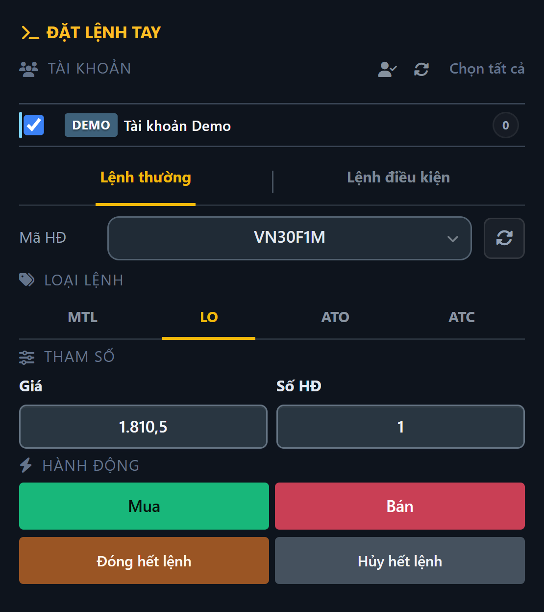
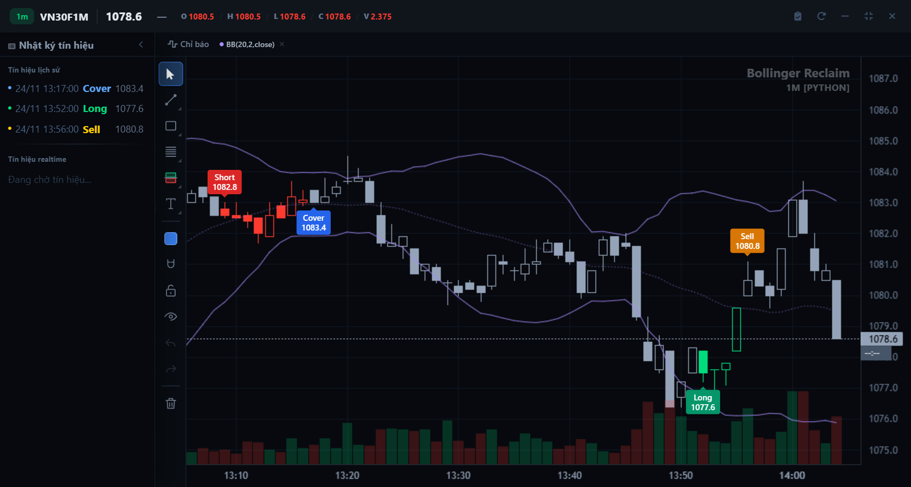
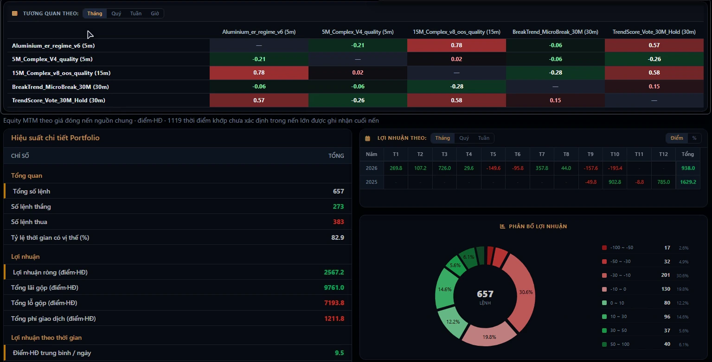
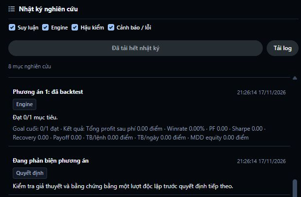
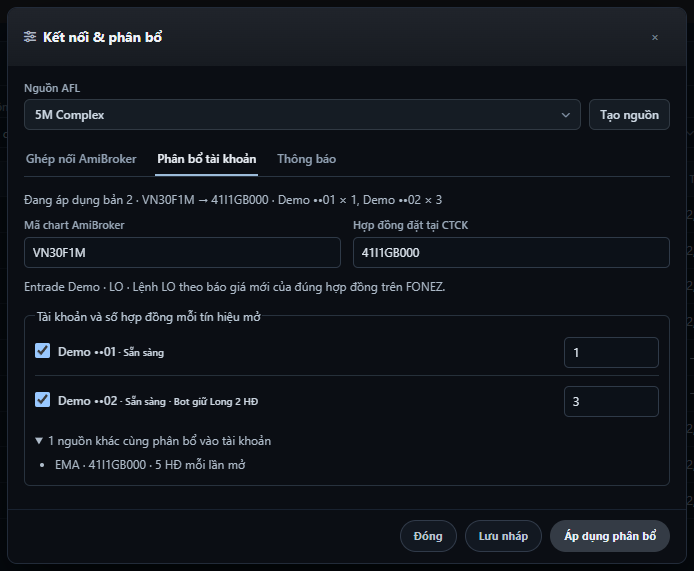

Dành riêng cho VN30F1M
Phái sinh
Việt Nam
Bạn quen viết chiến lược trên AmiBroker? Với Fonez, bạn có thể viết AFL, chạy backtest và gửi lệnh thẳng đến công ty chứng khoán ngay trong một ứng dụng.




- Dữ liệu thị trườngMiễn phí trọn đời
- Gửi lệnh trực tiếpChưa tới 1 giây
- Quản lý bot quaTelegram
Tổng quan
Từ ý tưởng đến phiên giao dịch
Thử chiến lược trên dữ liệu VN30F1M. Khi vào phiên, bạn có thể tự đặt lệnh, chạy bot hoặc giao việc cho AI.
Bot Trading
Chạy nhiều bot cùng lúc, mỗi bot dùng chiến lược và khung nến riêng. Bạn chọn tài khoản cho từng bot và theo dõi lệnh từ lúc có tín hiệu đến khi khớp.

- Giao dịch theo tín hiệu
- Cho bot giao dịch hai chiều, chỉ Long hoặc chỉ Short. Mỗi bot có giờ vào lệnh và mức chốt lời, dừng lỗ riêng. Bạn cũng có thể đặt dừng lỗ bám theo giá.
- DCA và Grid
- Với DCA, bạn đặt khoảng cách giá và khối lượng cho mỗi lần vào thêm. Với Grid, bot mua bán theo lưới giá bạn đặt, với khoảng cách giữa các mức tính theo điểm hoặc phần trăm.
- Quản lý bot từ xa
- Theo dõi vị thế, lệnh chờ và kết quả khớp lệnh. Qua Telegram, bạn có thể gắn hoặc gỡ bot trên những tài khoản mình được quyền quản lý.
Hand Trading
Bạn tự chọn điểm vào và điểm thoát. Ngay trên bảng giao dịch, bạn có thể gửi cùng một lệnh đến nhiều tài khoản.
- Đặt lệnh theo phiên
- Chọn lệnh LO, MTL, ATO hoặc ATC tùy phiên giao dịch. Bạn có thể mua, bán, hủy lệnh hoặc đóng vị thế trên các tài khoản đã chọn.
- Đặt lệnh theo mức giá
- Dùng If-Broke khi muốn vào lệnh lúc giá vượt một mốc, hoặc If-Touched khi giá chạm mốc đó. Bạn cũng có thể đặt chốt lời, dừng lỗ cố định hoặc dừng lỗ bám theo giá (trailing stop).
- Liên kết hai lệnh điều kiện
- Với OCO, khi một điều kiện được kích hoạt, Fonez tự hủy điều kiện còn lại. Bảng Live Desk cho biết lệnh nào đang chờ và lệnh nào đã gửi.
AI Trading
Bạn có thể nhờ AI theo dõi VN30F1M suốt phiên và hỏi vì sao AI đề xuất vào lệnh hoặc chờ thêm. Bạn quyết định sẽ duyệt từng lệnh hay cho phép AI tự gửi trong giới hạn đã đặt.

- Theo dõi cung cầu từ phiên ATO
- AI đọc sổ lệnh ngay từ đợt khớp lệnh mở cửa. Trong phiên, bạn có thể hỏi giá khớp, so sánh hợp đồng với chỉ số VN30 và các cổ phiếu trong rổ, hoặc xem bên mua hay bên bán đang chủ động nếu nguồn dữ liệu hỗ trợ.
- Xem nhiều khung nến và dự báo giá
- AI dùng nến đã đóng để so sánh chỉ báo trên tối đa bốn khung thời gian. Với dự báo từ 1 đến 24 nến tiếp theo, bạn xem được cả khoảng giá dự kiến lẫn sai số trên dữ liệu kiểm định.
- Giao việc bằng tiếng Việt
- Chẳng hạn, bạn có thể nhắn “Tạm dừng mở vị thế mới” hoặc yêu cầu đóng vị thế vào một giờ cụ thể. AI nhắc lại yêu cầu để bạn kiểm tra và xác nhận.
- Đặt giới hạn giao dịch cho AI
- Bạn chọn tài khoản, loại lệnh, khoảng giá, khối lượng tối đa, giới hạn vị thế và thời hạn cấp quyền. Fonez kiểm tra các điều kiện này trước khi gửi lệnh.
- Bảo vệ vị thế đang mở
- Đặt ngưỡng bảo vệ hoặc hẹn giờ thoát lệnh. Khi giá chạm ngưỡng hoặc đến giờ đã hẹn, Fonez kiểm tra lại vị thế và quyền giao dịch trước khi gửi lệnh giảm vị thế.
- Xem lại quyết định và kết quả khớp lệnh
- Nhật ký lưu diễn biến giá, sổ lệnh và những ghi nhận từ các phiên trước để bạn xem lại cơ sở cho đề xuất của AI. Bạn có thể đối chiếu giá và khối lượng khớp với công ty chứng khoán, kể cả khi lệnh mới khớp một phần.
Backtest
Chạy thử chiến lược trên dữ liệu lịch sử để biết bot đã mua bán lúc nào, vốn có lúc giảm bao nhiêu và kết quả thay đổi thế nào khi kết hợp nhiều bot.

- Viết chiến lược theo cách bạn quen
- Viết mã bằng AFL, Python hoặc Pine Script, hoặc ghép các điều kiện trong Visual Builder. Ở mục Ý tưởng, bạn có thể mô tả quy tắc giao dịch để AI viết mã nháp rồi tự chỉnh sửa.
- Chạy thử và xem lại từng lệnh
- Thử bot theo tín hiệu, DCA hoặc Grid trên dữ liệu có sẵn hay tệp CSV của bạn. Sau khi đặt phí, giờ giao dịch, mức dừng lỗ và chốt lời, bạn có thể xem từng lệnh, đường vốn và mức sụt giảm.
- Kiểm tra độ ổn định của chiến lược
- Thử nhiều bộ tham số với Optimize, mô phỏng lãi lỗ với Monte Carlo hoặc kiểm tra xem tín hiệu có bị vẽ lại. Với bot theo tín hiệu, bạn còn có thể kiểm định ngoài mẫu bằng Walk-Forward và ước tính nguy cơ tối ưu quá mức bằng PBO.
- Kết hợp nhiều bot trong một danh mục
- Chọn khung nến và tỷ trọng cho từng bot. Xem đường vốn chung, mức đóng góp của mỗi bot và tương quan theo tuần, tháng hoặc quý để biết các bot có thường lỗ cùng lúc hay không.
AI Research
“Nếu thoát lệnh sớm hơn, bot có giảm lỗ không?” Hãy giao câu hỏi đó cho Deep Mind. AI đề xuất cách thử, còn Fonez chạy backtest ngay trên máy của bạn để so sánh với bot gốc.

- Tạo bot mới hoặc cải tiến bot đang có
- Mô tả ý tưởng bằng tiếng Việt để Deep Mind tạo bot AFL. Bạn cũng có thể cải tiến bot AFL, Visual hoặc Pine Script, tối ưu tham số cho bot Python, hoặc chỉ yêu cầu đánh giá bot gốc.
- Đặt tiêu chí cho bot
- Bạn có thể đặt mức sụt giảm vốn tối đa (MDD), mức lợi nhuận hoặc tỷ lệ thắng mong muốn. Deep Mind nhắc lại mục tiêu để bạn xác nhận rồi cho biết từng phương án đạt những tiêu chí nào.
- Tìm điểm chung trong các lệnh thua
- Deep Mind đối chiếu lệnh thua với lệnh thắng để tìm điều kiện có thể dùng làm bộ lọc. Bạn có thể cho AI thử bộ tham số khác, đổi quy tắc vào hoặc thoát lệnh, hoặc kết hợp cả hai.
- Đo tác động của từng thay đổi
- Nếu sửa cả điểm vào lẫn điểm thoát, Fonez có thể bỏ từng thay đổi rồi chạy lại để xem quy tắc nào giúp bot tốt hơn. Deep Mind còn có bước phản biện độc lập để kiểm tra lý do chọn phương án.
- Kiểm chứng trên dữ liệu ngoài mẫu
- Walk-Forward cho biết kết quả qua từng giai đoạn. Bạn có thể kiểm tra thêm tín hiệu vẽ lại và nguy cơ tối ưu quá mức. Chế độ Thực chiến OOS cần ít nhất 12 tháng dữ liệu và dành riêng giai đoạn cuối để kiểm chứng phương án đã chọn.
- Chạy tiếp phiên nghiên cứu và lưu bot
- Bạn có thể hỏi tiến độ, điều chỉnh hướng nghiên cứu hoặc tạm dừng rồi tiếp tục từ bước đã lưu. Xem lại từng lần thử trong nhật ký và lưu phương án bạn chọn thành một bot mới để so với bản gốc.
AmiBroker Plugin
Bạn đã có bot AFL trên AmiBroker? Cứ để bot chạy trên biểu đồ quen thuộc. Fonez nhận tín hiệu từ biểu đồ trên cùng máy, rồi chuyển lệnh đến các tài khoản bạn chọn.

- Giữ chiến lược trên AmiBroker
- Thêm đoạn AFL do Fonez cung cấp vào công thức trên biểu đồ. AmiBroker vẫn quyết định điểm vào và điểm thoát. Ở chế độ Chỉ nhận, bạn có thể kiểm tra từng tín hiệu Buy, Sell, Short và Cover trước khi bật chuyển lệnh.
- Chọn số hợp đồng cho từng tài khoản
- Cùng một tín hiệu mở vị thế, bạn có thể đặt một hợp đồng cho tài khoản này và ba hợp đồng cho tài khoản khác. Plugin hiện hỗ trợ lệnh giới hạn (LO) trên Entrade Demo trong phiên khớp lệnh liên tục.
- Dùng nhiều bot trên cùng tài khoản
- Fonez ghi riêng số hợp đồng đã khớp của từng bot. Khi một bot báo thoát, Fonez chỉ gửi lệnh đóng cho phần vị thế của bot đó.
- Tra lại tín hiệu và kết quả khớp lệnh
- Xem lúc nào AmiBroker phát tín hiệu, lệnh đã gửi đến tài khoản nào và đã khớp bao nhiêu. Bạn có thể chọn nơi nhận thông báo Telegram hoặc Zalo riêng cho từng bot.
Công ty chứng khoán
Chọn tài khoản để đặt lệnh ngay trong Fonez. Dữ liệu giá VN30F1M có thể lấy từ DNSE hoặc SSI FastConnect.
- DNSE
- Kết nối DNSE Real, DNSE Master SACO hoặc Entrade Real. Nếu muốn thử đặt lệnh trước, bạn có thể dùng Entrade Demo.
- SSI
- Kết nối tài khoản qua SSI FastConnect Trading v2 hoặc v3.
- TCBS
- Đặt lệnh phái sinh qua tài khoản TCBS iFlash.
- VPBS
- Đặt lệnh qua tài khoản VPBS. Hỏi Fonez về bản cài hỗ trợ VPBS.
Chạy Fonez trên máy của bạn
Bạn có thể chạy bot và backtest trên máy tính cá nhân hoặc máy chủ riêng.
Kết nối với trợ lý AI
Dùng AI của Fonez hoặc kết nối bằng khóa API của bạn. Nếu đang dùng ChatGPT hoặc Claude Desktop, bạn có thể kết nối qua MCP để làm việc với các công cụ Fonez mà bạn đã cấp quyền.
Điều khiển bot và nhận thông báo
Dùng Telegram để xem vị thế, điều khiển bot và xác nhận lệnh đặt tay. Tín hiệu giao dịch, thông báo khớp lệnh và báo cáo có thể gửi về Telegram hoặc Zalo.
Liên hệ qua Zalo
Bạn cần hỗ trợ cài đặt Fonez?
Nhắn cho Fonez qua Zalo nếu bạn cần hướng dẫn kết nối tài khoản chứng khoán, thiết lập bot hoặc điều khiển bot qua Telegram.